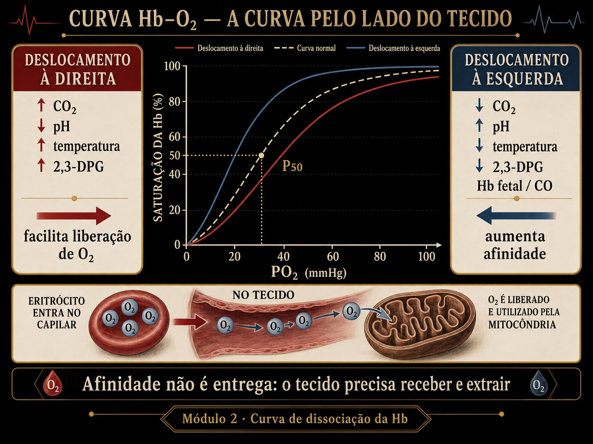

A mesma curva que liga PaO₂ à SaO₂ no pulmão conta, do lado de cá, a história da descarga: quanto O₂ a hemoglobina solta no tecido — e como acidez, calor e CO₂ ajudam a soltar.

Fig. 2 · Curva de dissociação pela perspectiva do tecido. O deslocamento altera afinidade e descarga de O2. A curva precisa ser lida pelo que acontece no tecido, não apenas pela saturação arterial.
Duas SvO₂ opostas, dois destinos
Cinco atos. A variável escondida é o que a SvO₂ realmente mede — e quando a curva deixa de explicá-la. (Caso didático; nenhuma conduta é prescrita.)
Ato 1 · dois leitos
Dois choques. Ambos com lactato alto. A diferença está na saturação venosa central.
A · hemorragia · ScvO₂ 52%B · sepse · ScvO₂ 82%ambos lactato ↑
Ato 2 · a leitura ingênua
"B tem ScvO₂ ótima, está melhor." Mas o lactato de B também está alto. Como?
Ato 3 · a fenda
A SvO₂ lê a extração. Baixa = tecido espremendo a Hb ao máximo (A, hemorragia). Alta = o O₂ voltou sem ser usado (B).
Ato 4 · decompor
Em A, a curva explica tudo: pouca entrega → extração máxima → SvO₂ baixa, e a acidose desvia a curva à direita facilitando a descarga. Em B, a entrega global está boa e o tecido não capta — a falha é micro/mitocondrial, fora da curva macro.
Ato 5 · a ferramenta
Para ler a descarga é preciso ver a curva, o ponto arterial, o venoso e o P50 se deslocando. É o Instrumento.
▸ Revelar a variável escondida
A variável é a extração (descarga A→V), não a SvO₂ isolada. SvO₂ baixa = extração alta (curva explica); SvO₂ alta com lactato alto = extração falha que a curva de dissociação não captura (desacoplamento macro-micro → módulos 12/21).
Trilha socrática
Siga as setas pela curva.
Mesma SaO₂ entrega igual ao tecido?
Não necessariamente: o que o tecido recebe é a descarga entre o ponto arterial e o venoso, e ela depende de onde a curva está.
O que define "onde a curva está"?
O P50: a PO₂ em que a Hb está 50% saturada. Padrão ≈ 26,8 mmHg. P50 maior = curva à direita.
O que desloca o P50?
O efeito Bohr: acidose, CO₂, temperatura e 2,3-DPG empurram à direita; alcalose, frio e hipocapnia, à esquerda.
Direita ajuda ou atrapalha o tecido?
Ajuda a soltar: à direita, para a mesma PO₂ venosa, a Hb entrega mais O₂. É a beleza do Bohr — o músculo ativo (ácido, quente, hipercápnico) cria as condições da própria descarga.
E o pulmão, não fica prejudicado?
Pouco: no platô (PO₂ alta), a curva é quase plana — a captação arterial muda pouco. O preço da direita é pago no platô, o ganho é colhido no joelho tecidual.
Então SvO₂ baixa é sempre ruim?
Não: SvO₂ baixa = extração alta (tecido compensando). O alarme é a SvO₂ alta com lactato alto — extração que falhou, e isso a curva não mostra.
Instrumento · a curva de dissociação ao vivo
A curva pontilhada é a padrão; a sólida, a atual. Os pontos arterial e venoso mostram a descarga (ΔS). Mexa nos fatores de Bohr e veja o P50 migrar.
curva padrão (P50 26,8)curva atualarterialvenoso
PvO₂ é o ponto tecidual (venoso). Baixe-o (extração máxima) ou suba-o (extração baixa) e veja a descarga mudar.
Lab · desloque a curva, leia a descarga
Cenários ou as duas alavancas (pH = Bohr; PvO₂ = extração). O veredito vira conforme o P50 e a descarga; os banners explicam o mecanismo.
padrãoatualarterialvenoso
Posição da curva & descarga
—
Desvio à direita. Acidose/CO₂/febre/2,3-DPG↑ sobem o P50: para a mesma PO₂ venosa, a Hb solta mais O₂. O tecido que trabalha cria as condições da própria descarga.
Desvio à esquerda. Alcalose/frio/hipocapnia/2,3-DPG↓ derrubam o P50: a Hb segura o O₂. Boa captação no pulmão, descarga tecidual prejudicada.
Extração máxima. PvO₂/SvO₂ baixas: o tecido está espremendo a reserva. A curva explica — entrega curta, extração compensatória.
Extração baixa — atenção ao paradoxo. SvO₂ alta: pouca descarga. Se houver lactato alto, a falha é micro/mitocondrial (séptico) e não aparece nesta curva macro.
Avaliação · tutor gráfico
Cada questão desenha uma curva computada ao vivo. Leia o deslocamento e a descarga — feedback persistente.
0 / 0 respondidas
Honestidade do modelo
Material educacional · não é suporte à decisão. Ensina-se o mecanismo da descarga e do Bohr — nunca dose, alvo ou conduta para um paciente específico.
→ Severinghaus assume curva normal: co-oximetria real (carboxi/metaHb, HbF) foge do modelo. → pH e CO₂ são fatores Bohr acoplados in vivo; aqui são sliders independentes (idealização didática). → O desvio é modelado por reescala de P50 (aproximação), não pela termodinâmica completa de Adair. → A SvO₂ alta com lactato alto do séptico é micro/mitocondrial e não é capturada por esta curva macro — declarado no caso. Os números são exatos dentro do modelo.
Pontes
→ Módulo 1 · CaO₂ — a saturação vira conteúdo; a curva alimenta a barra de CaO₂.